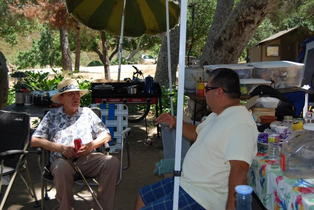

Bob (Roberto) Guerrero

TO ALL GUERRERO FAMILY AND FRIENDS.
To inform you about the sadly news, Bob (Roberto) Guerrero, Zenaido's youngest son had passed away on Saturday September first 2012.
Here is Bob's, information regarding the Rosary and Mass being held this week. The Rosary will be this Wednesday, Sept. 5 at the Lima Family Santa Clara Mortuary at 7:00pm, and the Mass will be the following morning, on Thursday, Sept 6. at 11:00am at ST. MARY'S CHURCH, 219 Bean Ave, Los Gatos CA 95030, Phone 408-354-3726 . There will be a reception immediately following the Mass at PEDRO'S RESTAURANT, 316 N. Santa Cruz Ave. Los Gatos CA 95030 Attached is Bob's daughters, Julie and Kathy's emails for you to get in touch with them for more information. julielabosky@comcast.net, Kathryn_Nunez@alliedtelesis.com
Also you can get more information by clicking the Lima Family Santa Clara Mortuary website link
This is information about how to get to the mortuary for the Rosary:
Lima Family Santa Clara Mortuary466 North Winchester BlvdSanta Clara, CA 95050
(408) 296-2977
Fax: (408) 296-6085http://www.limafamilysantaclara.com/View Map
Directions
From South San Jose Travel Highway 101 north to Highway 280. Proceed north on Highway 280 to Highway 880 north. Continue to Stevens Creek Boulevard. Exit and proceed west to Winchester Boulevard. Turn right onto Winchester Boulevard; the funeral home is ahead on the left side of the street.
From Highway 680 Proceed north on Highway 680 to Highway 280 north. Continue to Highway 880 north and proceed to Stevens Creek Boulevard. Exit and proceed west to Winchester Boulevard. Turn right; the funeral home is ahead on the left side of the street.
From San Francisco Travel Highway 280 south to Winchester Boulevard. Exit and turn left onto Winchester Boulevard; the funeral home is ahead on the left side of the street.
From Oakland Travel south on Highway 880 to Stevens Creek Boulevard. Exit and proceed west to Winchester Boulevard. Turn right; the funeral home is ahead on the left side of the street.